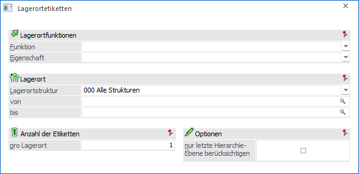
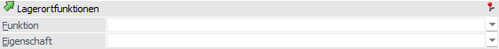
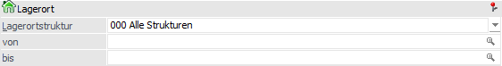
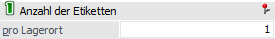
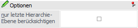

Im Menüpunkt…
1 WinLine FAKT
1 Auswertungen
1 Etiketten
1 Lagerortetiketten
… können für bereits angelegte Lagerorte entsprechende Etiketten erstellt werden (das Erscheinungsbild der Etiketten kann im Formular-Editor individuell angepasst werden).

Lagerortfunktionen

Über den Bereich "Lagerortfunktionen" kann die Ausgabe nach Lagerortfunktionen und Eigenschaften der Lagerorte eingeschränkt werden.
Hinweis
Innerhalb der ausgewählten Funktionen bzw. Eigenschaften erfolgt eine ODER-Verknüpfung. Die beiden Elemente "Funktion" und "Eigenschaft" werden hingegen mit einer UND-Verbindung verknüpft.
Beispiele
ü Bei der Funktion wird "Warenausgangslager" und "Wareneingangslager" ausgewählt und die Eigenschaft bleibt leer. Somit werden Etiketten für alle Lagerorte erstellt, die entweder Warenausgangslager oder Wareneingangslager oder beides hinterlegt haben.
ü Die Funktion bleibt leer und bei den Eigenschaften wird z.B. "Kühllager" und "Trockenlager" per Checkbox ausgewählt. Somit werden Etiketten für alle Lagerorte erstellt, die entweder Kühllager oder Trockenlager oder beides hinterlegt haben.
ü Bei der Funktion wird "Warenausgangslager" und bei den Eigenschaften wird "Kühllager" und "Trockenlager" ausgewählt. Nun werden Etiketten für alle Lagerorte, die entweder Warenausgangslager UND Kühllager oder Warenausgangslager UND Trockenlager hinterlegt haben, ausgegeben.
Ø Funktion
Hier ist die Auswahl einer oder mehrerer Lagerortfunktionen per Auswahlbox möglich. Bei Auswahl mehrerer Funktionen werden diese mit der ODER-Verknüpfung angewendet.
Ø Eigenschaft
Hier ist die Auswahl einer oder mehrerer Eigenschaften per Auswahlbox möglich. Bei Auswahl mehrerer Eigenschaften werden diese mit der ODER-Verknüpfung angewendet.
Lagerort

In diesem Bereich können die auszuwertenden Lagerorte selektiert werden.
Ø Lagerortstruktur
In dem Feld "Lagerortstruktur" kann mit Hilfe einer Auswahlliste die auszuwertende Struktur gewählt werden. Durch Auswahl einer Struktur steht der auszuwertende Lagerortbereich fest und die nachfolgenden Felder ("Lagerort von / bis") stehen für eine Eingabe nicht zur Verfügung.
Ø Lagerort von / bis
An dieser Stelle kann der Lagerort bzw. der Bereich der Lagerorte angegeben werden, für welchen eine Etikettenausgabe erfolgen soll.
Anzahl der Etiketten

Ø Anzahl der Etiketten pro Lagerort
Hier kann definiert werden, wie viele Etiketten pro Lagerort ausgegeben werden sollen.
Hinweis
Im Standardformular (Querformat) werden pro Zeile 3 Etiketten ausgegeben. Es wird hierbei immer eine Zeile komplett ausgegeben, d.h. auch wenn nur 1 Etikett eines Lagerorts ausgegeben werden soll, würden 3 Etiketten gedruckt werden.
Optionen

Ø nur letzte Hierarchie-Ebene berücksichtigen
Durch Aktivierung dieser Option werden nur Etiketten für die Lagerorte der letzten Hierarchie-Ebene ausgegeben.
Buttons

Ø Ausgabe Bildschirm
Mit Hilfe des Buttons "Ausgabe Bildschirm" oder der Taste F5 werden die Etiketten am Bildschirm ausgegeben.
Ø Ausgabe Drucker
Durch Anwahl des Buttons "Ausgabe Drucker" werden die Etiketten am Drucker ausgegeben.
Ø Ende
Durch Anwahl des Buttons "Ende" bzw. der Taste ESC wird das Fenster geschlossen.
Ø Filter bearbeiten
Durch Anklicken des Buttons "Filter bearbeiten" kann die Ausgabe nach frei definierbaren Kriterien eingeschränkt werden.